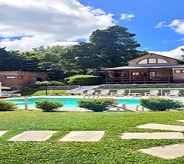

<div class="predio">
    <h2>Nuestro predio</h2>
    <article class="exterior">
        <section id="jardin">
            <h3>Jardines</h3>
            <aside id="fotos-jardin">
                
                
                
                
                
                
            </aside>
            <aside id="descripcion">
                <p>Nuestro predio, ubicado en las laderas del Cerro El Centinela, posee media hectárea de parques y
                    jardines...
                    Con frondosa y añeja arboleda, con más de 20 años. Hermosos pinos, acacias, aromos y araucarias.
                    Todo su perímetro cercado con diversos ligustros, cotoneaster y grateau, que le dan gran colorido y
                    privacidad. Numerosa cantidad de rosales y arbustos florales. La vegetación de jardinería , acompaña
                    armoniosamente la individualidad de cada cabaña.
                    Verde y corto césped en toda la extensión, con caminos interiores de pedregullo granítico,
                    perfectamente delimitados.
                    El predio se encuentra iluminado, desde el portón de ingreso, hasta los caminos y jardines.</p>
            </aside>
        </section>
        <section id="pileta">
            <h3>Piscina con hidromasaje</h3>
            <aside id="fotos-pileta">
                
                
            </aside>
            <aside id="descripcion">
                <p>Un conjunto desarrollado para el descanso y la recreación.
                    Una piscina de 8 x 4 mts y 1,40 mts. de profundidad, de 45.000 lts de cristalina agua.
                    Un Solarium circundante, con mesas, sombrillas, sillas, reposeras y sillones para el descanso y para
                    disfrutar de un día soleado...
                    La piscina se habilita y está disponible entre el 1 de Diciembre y el 20 de Marzo.</p>
            </aside>
        </section>
    </article>
</div>